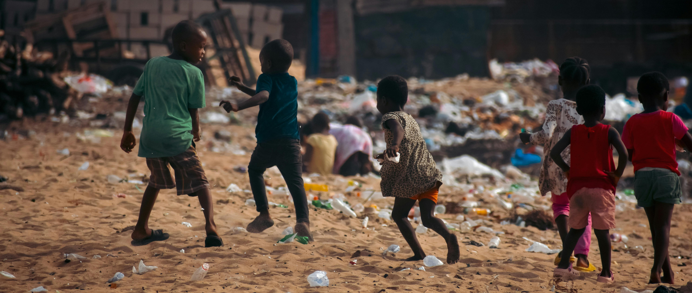

ABOUT
POSSEは労働・貧困問題に関する様々な問題に取り組むNPO法人です

活動内容
📕
読書会
週3回、「しあわせの形について」をテーマに選出された秘蔵書の読書会を行っています。
🎬
上映会
「ご先祖様と対話する」ことをテーマに、霊媒師"呪物カルロス"のドキュメンタリー映画シリーズ全１３２本の上映を実施しています。
🎤
講演会
黒崎ファンドル雄二による「”友達”を”資産”に変える」セミナーの開催。
POSSEは労働・貧困問題に関する様々な問題に取り組むNPO法人です

📕
週3回、「しあわせの形について」をテーマに選出された秘蔵書の読書会を行っています。
🎬
「ご先祖様と対話する」ことをテーマに、霊媒師"呪物カルロス"のドキュメンタリー映画シリーズ全１３２本の上映を実施しています。
🎤
黒崎ファンドル雄二による「”友達”を”資産”に変える」セミナーの開催。